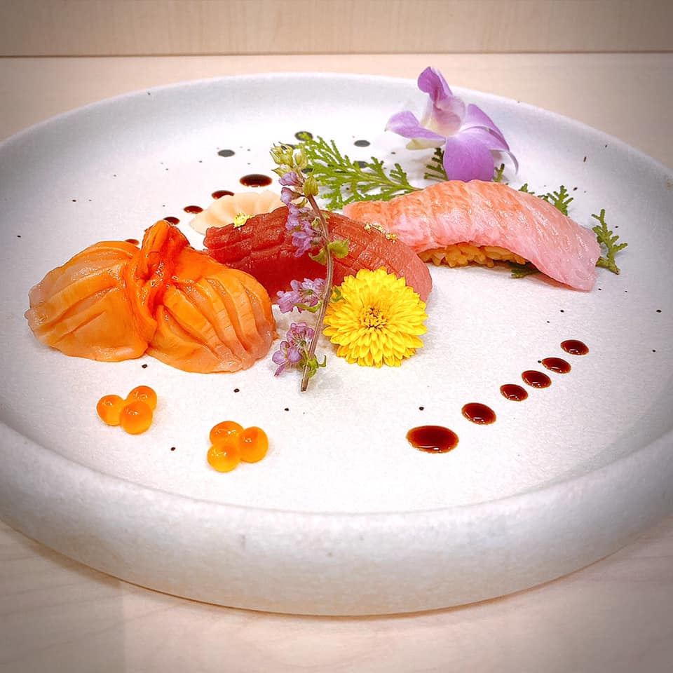
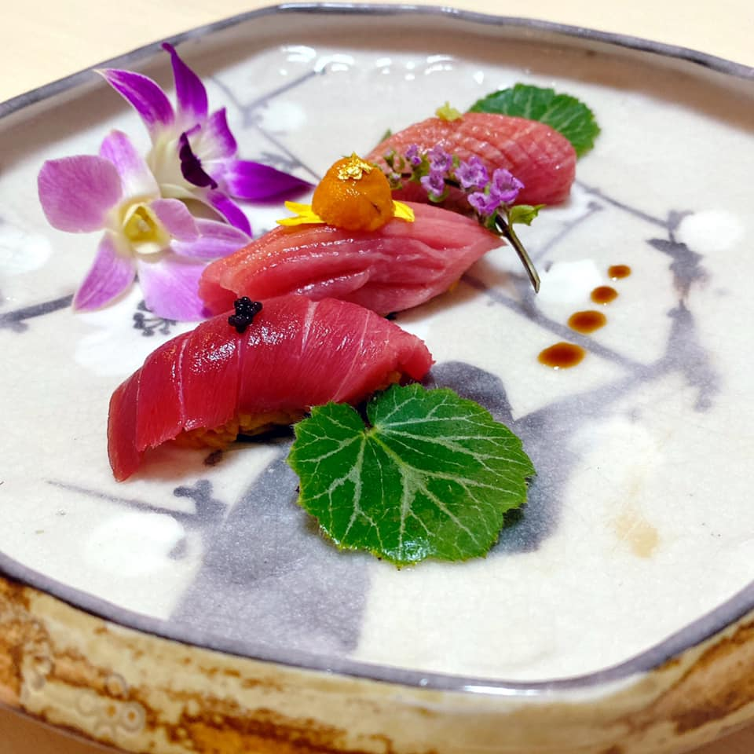
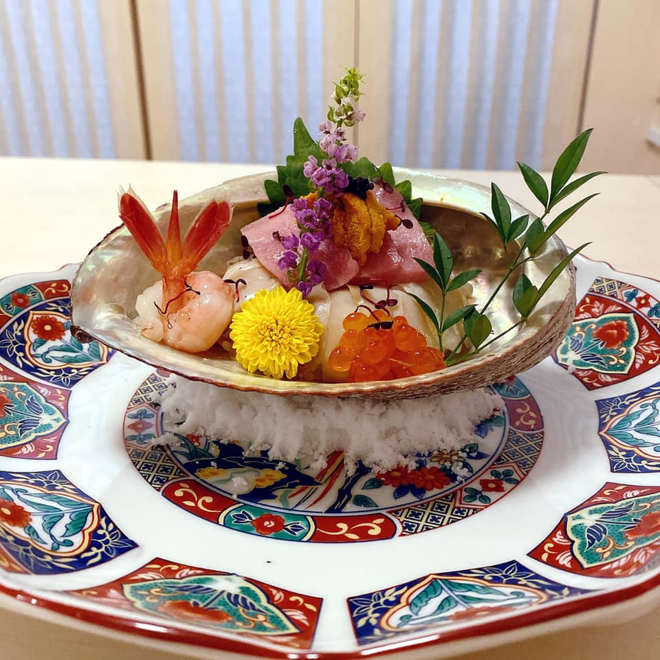
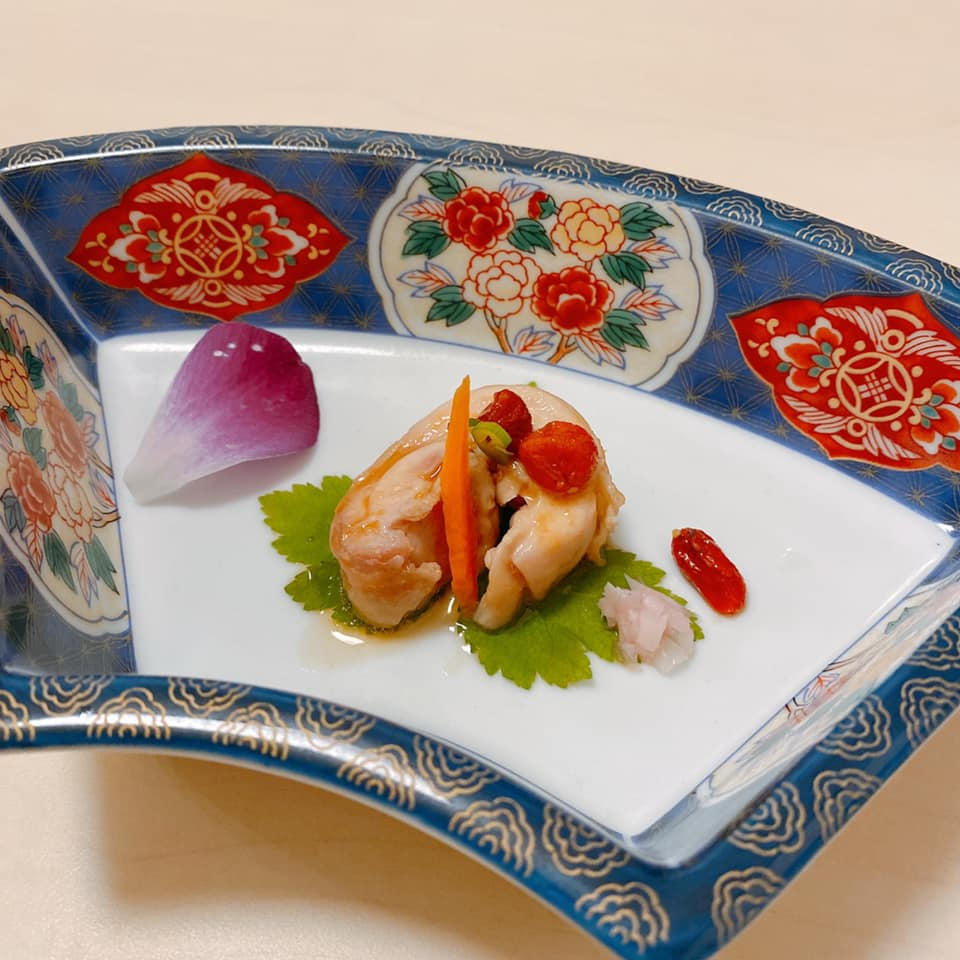
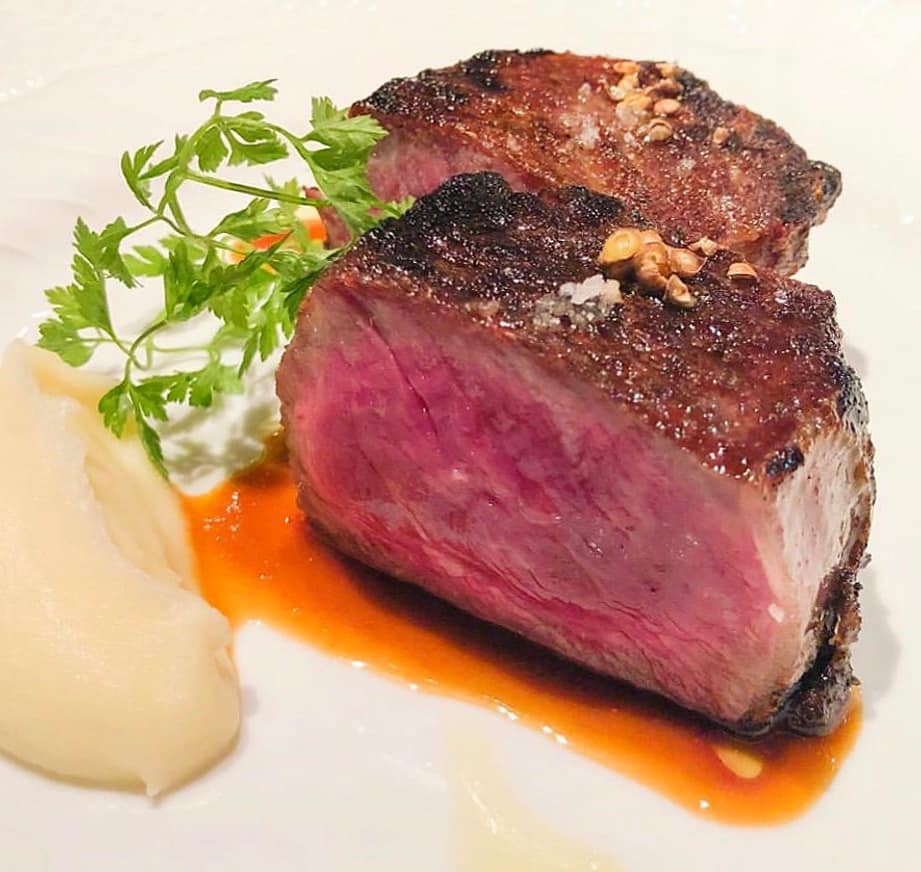
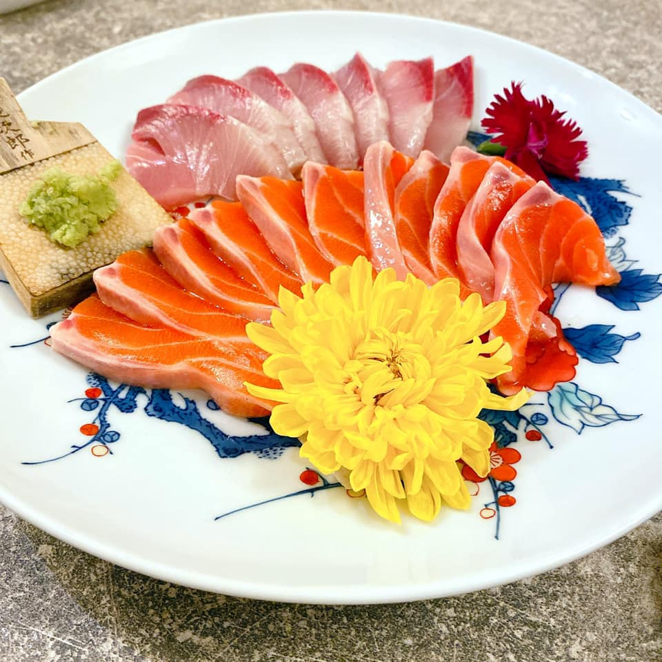

history
Kaiseki comes from Zen Tao; in order to resist hunger while listening to Zen for a long time, I hold a stone in my stomach, called "Kaiseki"; later there were refreshments for listening Zen monks, and then the most famous Kaiseki cuisine. It’s interesting to think about it here. The last delicacy at the beginning is related to fighting hunger.
Kaiseki cuisine starts from offering Ting Zen refreshments, taking advantage of Japanese cuisine as the first feature, and bringing to the fullest the ability to be close to nature while enjoying human cuisine. Raw food should naturally be fresh, and the time and storage of the raw materials, the location and methods of the raw materials will be very laborious; and raw food itself has become a strict standard for freshness considerations. When the ancestors said food, it was also the Yue people's "xian" character representing the highest state; it makes sense.
Cooked food naturally also accounts for a large proportion. Among the cooking tools, the selection of various stones is the most interesting, and there are some iron plates, but the iron plates are generally covered with plant leaves to avoid direct contact with the iron plates. The various decoration tools are also pottery handicrafts, very simple and simple. They are generally clumsy but gentle arcs, and they have a heavy and solid feel in the hands.
The environment is really like listening to Zen, dark and simple decoration like tableware, without any gorgeousness, and the lighting is also low-key and appropriate. However, the dishes do not conceal their brilliance in the slightest. From the color matching of the salad to the cutting and placing of the lobster, each of the eight dishes in turn will be colorful and eye-catching, which is a rare visual pleasure. It is matched with the light and suitable scent of cooked food, which is really good in "color and fragrance". Of course, there is a bit of "colorless fragrance" in raw food, because the key lies in the mouthfeel of the sashimi of the selected material~~ ~ The most interesting thing is that after a Kaiseki dinner is set, you still can't forget the original intention of listening to Zen while hungry, so you will be full in seven to eight minutes, not too full. Only in this way can be "refreshed", maybe. It is said that the most authentic kaiseki cuisine will grow different flowers and plants in the four seasons, with different decorations and lights, and add self-grown flowers and plants to the dishes as an auxiliary. It's really rare. Food is not about self-abuse~~It is not just the effort of gluttonous food itself...but try to blend with nature. This may be the solution to the highest level of food.
menu
| Menu of Kaiseki | ||||||
|---|---|---|---|---|---|---|
| photo |  |
 |
 |
 |
 |
 |
 |